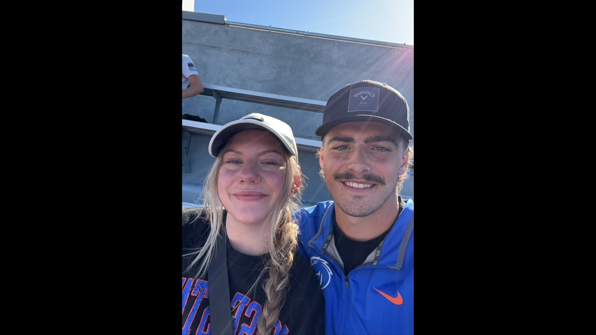

About Me
I am currently Studying coding as a student at CWI working toward finishing
my Associates degree in Software Engineering by spring of 2025. I am planning on transferring to BSU once
completed to achieve my bachelors. I have spent a good amount of time working different
variants of jobs listed in my experience page. These jobs have all given me very strong knowledge
in job/project management as well as understanding many different softwares which sparked my interest
to create better softwares to replace the current ones they use.
